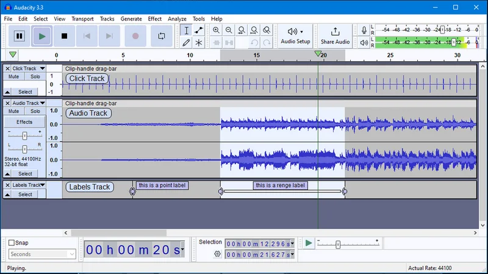

Audacity
Phần mềm ghi âm và chỉnh sửa âm thanh mã nguồn mở. Đơn giản, mạnh mẽ, miễn phí.

Audacity là phần mềm ghi âm và chỉnh sửa âm thanh đa luồng, mã nguồn mở và hoàn toàn miễn phí. Đây là công cụ xử lý âm thanh được sử dụng rộng rãi bởi cả người mới bắt đầu và chuyên gia.
Bạn có thể ghi âm từ nhiều nguồn khác nhau (micro, line-in), cắt ghép, trộn âm thanh và thêm nhiều hiệu ứng. Audacity hỗ trợ nhiều định dạng âm thanh phổ biến như WAV, MP3, FLAC, OGG. Phần mềm phù hợp cho việc ghi podcast, chỉnh sửa nhạc và xử lý âm thanh cơ bản.